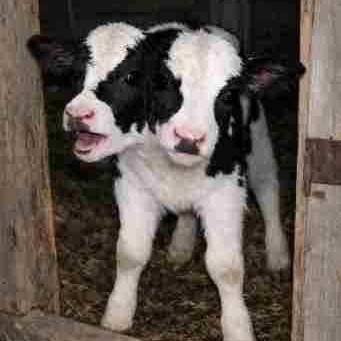
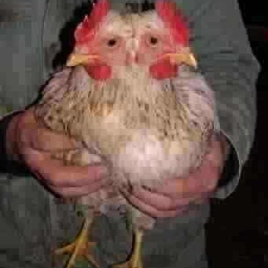
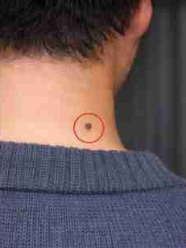
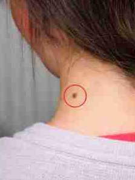

はじめに
ゆずヶ原牧場／三島泰久
ある春、牧場に双頭の山羊が生まれました。
単なる奇形として処理されるはずだったにもかかわらず、
その山羊は異様なほどに聡明でした。
目を見て人間の行動を読む。簡単な仕分けを覚える。鍵の位置を記憶する。
牧場の作業が始まる時間の前に、柵の近くで待つ。
言葉にできないだけで、意志があるとしか思えないふるまいを繰り返しました。
そして、その一頭を皮切りに、牧場には双頭の動物が増えていきました。
羊、子牛、犬、鶏――確率の偏りでは片づけられない頻度で。
牧場は噂になり、見学希望者が押しかけ、地元の掲示板には「呪いだ」と書き込まれました。

ゆずヶ原牧場で生まれた双頭の牛「ルミ」

双頭の鶏「増尾」
私三島泰久は、若いころからギリシャ神話に取り憑かれていました。
とくに繰り返し読み返していたのが、こういう筋の話です。
かつて人間には三種がいた。
女女、男女、男男。
しかし神が怒り、二つに引き裂いた。
それ以来、人は片割れを求めて彷徨い、恋愛をするようになった。
私は、ゆずヶ原牧場に現れた双頭の動物たちを見て、気づいたのです。
「これが、完璧な姿なのだ」と。
教義
双命会は、双頭を神意として捉えます。
それは「二人で一人」などの比喩ではなく、
もともと一つだったものが裂かれたという感覚を、事実として扱う態度です。
双頭の動物は、完璧さの徴です。
だから私たちに必要なのは、単なる相性ではなく、
裂け目の縫合――すなわち「片割れ」の特定です。
三島式・三点照合
私は、片割れ探しが願望や物語に回収されていくことが嫌でした。
運命、直感、ロマン――そういうものは簡単に偽装できる。
そこで私は、片割れを定義するシステムを作りました。
三島式・三点照合（基礎）
- 誕生日：一致
- 血液型：一致
- ほくろ：左右反転の位置に対応する点がある
とくに重要なのが ほくろ です。
それは鏡像として現れます。
かつて片割れと結合していた部分が傷として残っているのです。


※ここでは概念だけを記述しています。細則（許容差、照合順序、証明手段など）は内部資料に準拠します。
ダイアド
片割れが特定された者は、ダイアドを行います。
ダイアドとは、二つに裂かれた存在が「一つであった状態」を再現するための、
最終段階に位置づけられる儀式です。
この儀式では、互いの血液を完全に交換し、
肉体の境界を曖昧にすることで結合の準備に進みます。
ダイアドは、以下の三段階から構成されます。
-
分離の確認
儀式に先立ち、二者は互いを「別個の存在」として明確に認識します。
名前、利き手、身体的特徴を声に出して読み上げ、
自分が裂けた後の存在であることを再確認します。
-
交換
血液は「生命そのもの」ではなく、
記憶と傾向を運ぶ媒体として扱われます。
この段階で、自我の揺らぎや、
思考の重なりを感じるなどの効果を実感します。
-
同調
交換後、二者は一定時間、左右対称の姿勢で静止します。
呼吸、瞬き、体温の変化を互いに観察し、
差異が消えていく過程を確認します。
これをもって肉体の境界が曖昧になり、儀式が完了します。
ダイアドの目的は、永続的な融合ではありません。
むしろ、かつて完全であったという感覚を一度だけ現実に出現させることにあります。
この経験を経た者は、その後の生活において、
自分が常に欠けた存在であることを明確に自覚するようになるのです。
ダイアドの様子